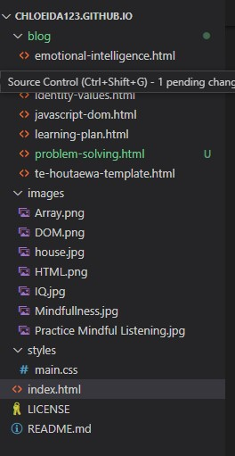

When you're just starting out with programming, it's easy to run into problems that make you wonder how anyone has ever managed to write a computer program. But the fact is, just about everyone else who's learned to code has had that experience and wondered the same thing, when they were starting out. This experience also happen to me most of the time, it could be only a simple problem or could be the hard one
One of the simple problem that I had was when I want to insert an image to my blog page and it didn't work.

At first, I try to change it with other images because I thought the images that I insert might be get blocked by the owner but still didn't work Second move, I asked to one of my study group, he advise me to make another directory for images and insert the images from there. I tried it and still didn't work

Finally I take a look the other blog page that I made before, I just realized that I type the wrong code. It should be “img src” not “img scr”

It's only because small simple thing ,cost an hour my study times

I learn that I need to be more carefully type the code, sometimes it can only because using the space, colon, etc or even only because I forget to save it can cause a problem
I do experience other problem which I can solve it elegantly. The task requirement to display a Fizz Buzz in particular number but in array. First thing I read pseudocode that already provided and I try to write the code and when I got stuck, I'm searching on google how to solve it and done and it's pretty good feeling. The thing that I learn from this experience is I still can do it as long as I still want to try it (Don't give up easily)

There are some ways to solve the problem in programming (problem-solving techniques/processes):